如何零成本使用SillyTavern（酒馆）
这个教程将详细地告诉大家在几乎零成本的情况下使用SillyTavern
目录：
- 准备
- 开始安装
- 安装NodeJS
- 安装Git
- 开始聊天
- 如何关闭
教程面向对象：
想要试试看AI聊天但是不想花钱的用户
有一点点动手能力的用户
准备
首先先安装SillyTavern，我们打开SillyTavern中文文档，按照里面的步骤进行
此处选择的是Git安装
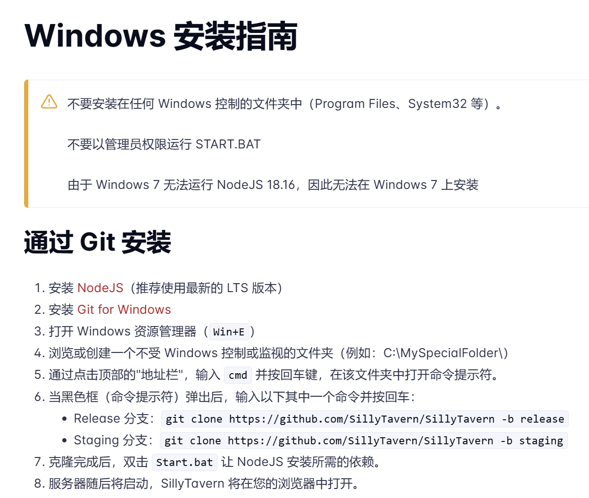
安装NodeJS
点击上面的链接，或者这个地方-> Node.js
进入后点击中间的Get Node.js
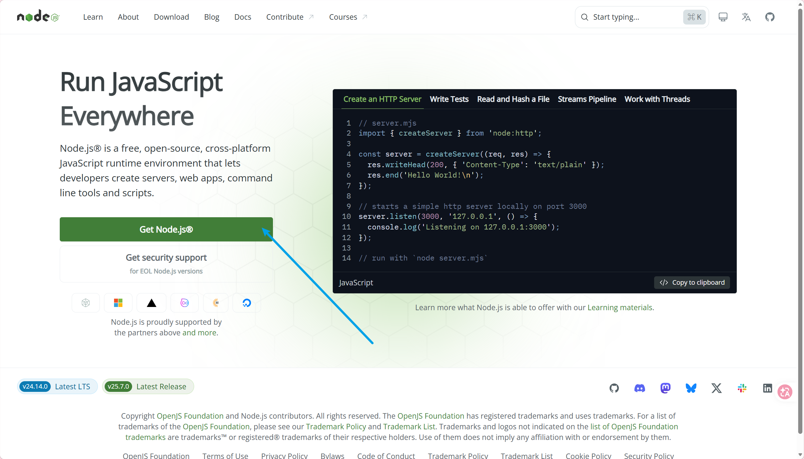
默认的话这里应该会自动帮你匹配好，直接点击下面的Windows Installer (.msi)下载安装包即可
下载完安装包后，点击打开，按照指引点击Next即可
为确保安装完成，在显示安装完毕后，按下Win+R键打开运行，输入cmd
在弹出的窗口处输入npm -v
如果弹出的内容是一个版本号的话（如下图），就说明安装完成，可以进行下一步
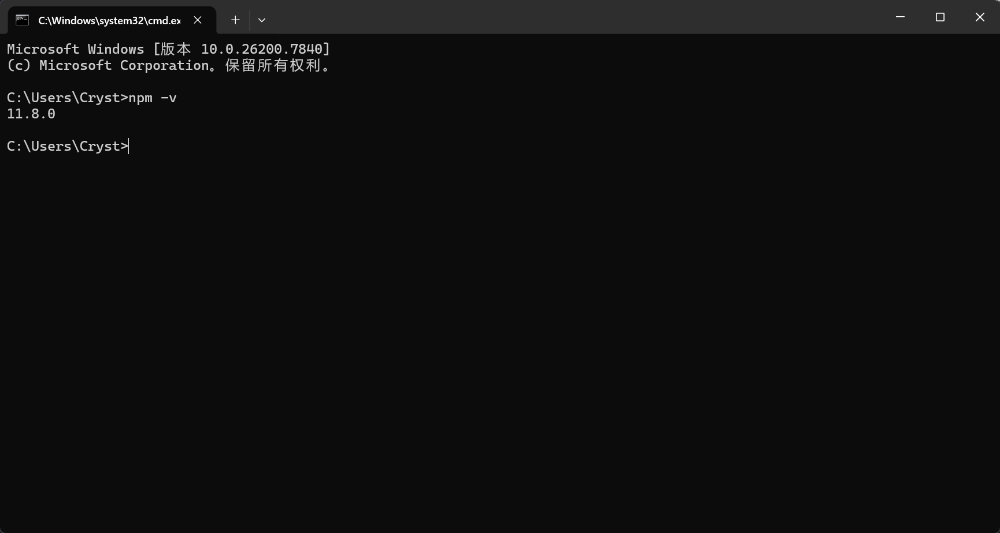
安装Git
由于我们选择的安装方式是Git安装，所以我们还要安装Git
可以通过上文的安装流程获得链接，也可以直接点击这里链接进行下载->Git
需要注意的是，Git的安装包放在了Github上，如果无法正常访问的话，可以先在Window自带的微软商店（Microsoft Store）中搜索Watt Toolkit，安装后选择网络加速一栏，划到下面找到Github，点击选择框后点击上文的一键加速便可返回下载链接进行下载
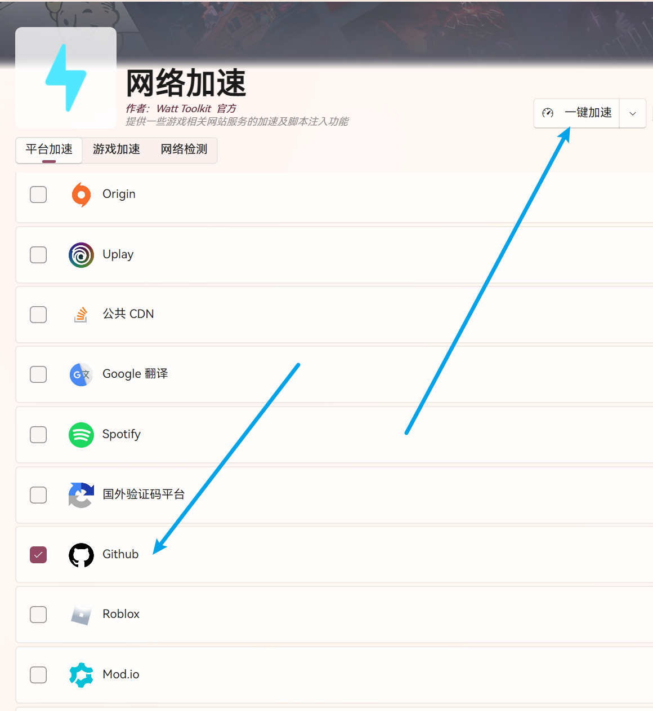
下载完安装包后Next即可
与上文一样，此处依旧可以通过cmd来检测是否成功安装，具体的输入为git -v，如果有弹出版本号则说明安装成功
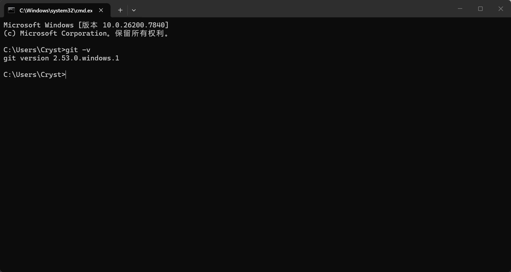
至此，我们的准备步骤已完成，接下来就是安装SillyTavern了
开始安装
首先我们先找一个空白的文件夹，这里建议该文件夹位于C盘以外的盘
创建后点击上面的任务栏，输入cmd
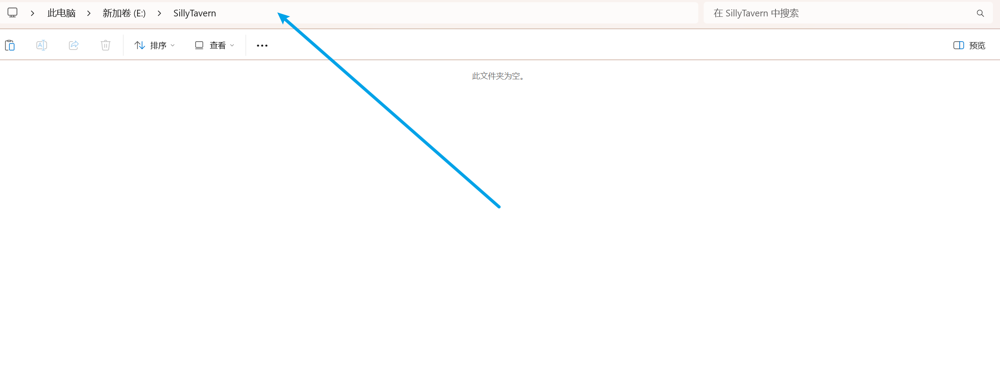
我们选择的是Release分支，所以复制这一串
1 | git clone https://github.com/SillyTavern/SillyTavern -b release |
复制后，在打开的cmd窗口处点击右键粘贴，之后回车即可
与上文一样，这里使用到了Github，会出现无法连接的情况，出现问题按照上文的步骤安装Watt Toolkit即可
下面是安装完成后的截图
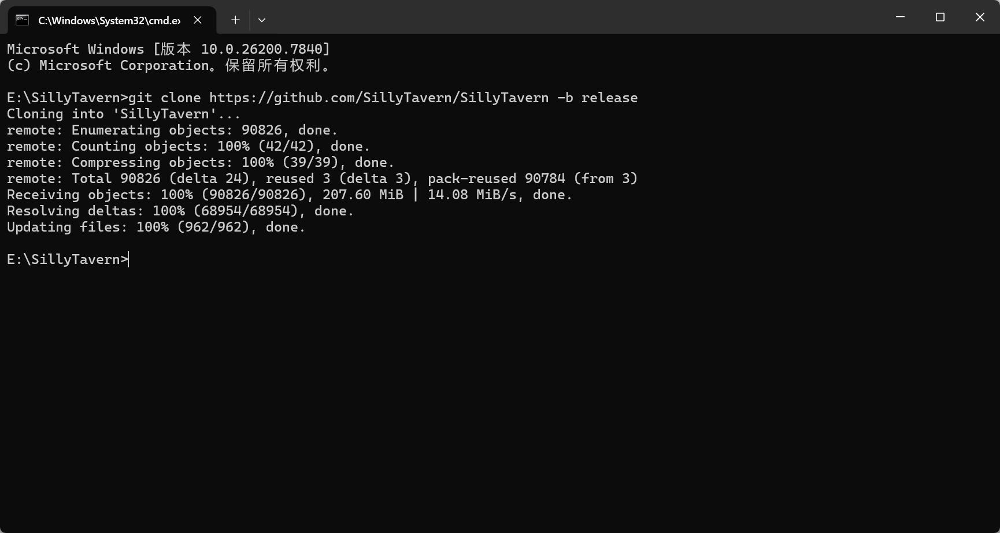
安装后进入文件夹，找到里面的Start.bat，点击运行，而后会自动安装所需要的一些依赖，静静等待安装完即可
安装后会自动打开浏览器进入到SillyTavern的界面
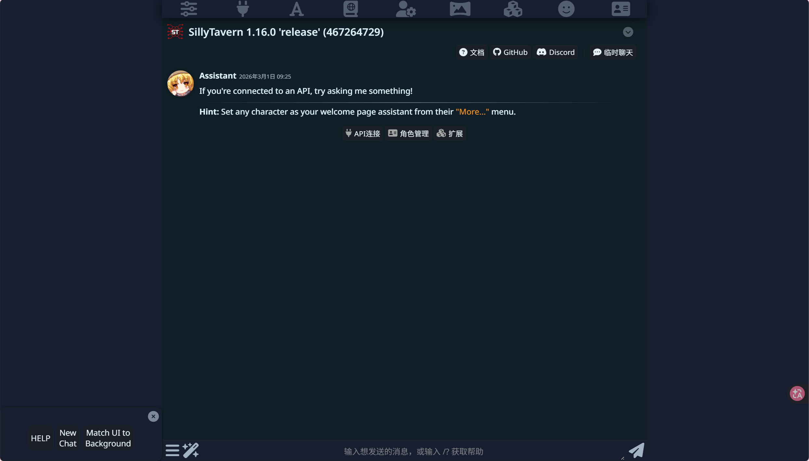
不出意外的话默认界面应该是这个
现在还没办法进行聊天，我们还需要获取到API Key来连接
我们打开硅基流动的官网-> 硅基流动 SiliconFlow
在右上角选择登录，按照提示进行用户注册
注册后会提示需要实名认证
在认证完后点击左边的账号管理-API 密钥
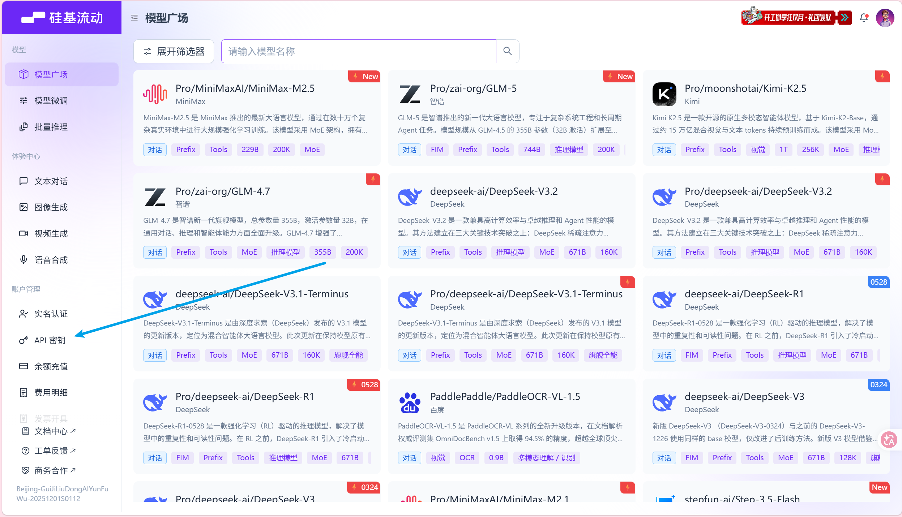
点击创建密钥，名称可以随便填，生成后点击密钥附近的复制按钮
复制后回到SillyTavern
点击最上面第二个长得像插头的按钮进入API连接配置选项：
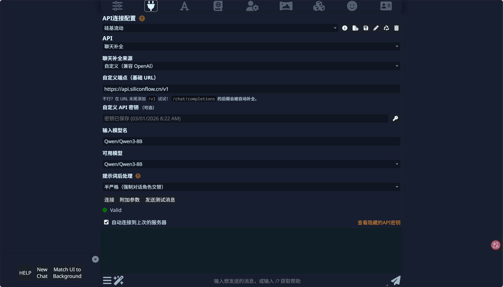
_API_选择聊天补全
_聊天补全来源_选择自定义（兼容 OpenAI）
_自定义端点（基础 URL）_输入硅基流动的URL：https://api.siliconflow.cn/v1
_自定义API密钥_选择右边的小钥匙按钮进入配置界面
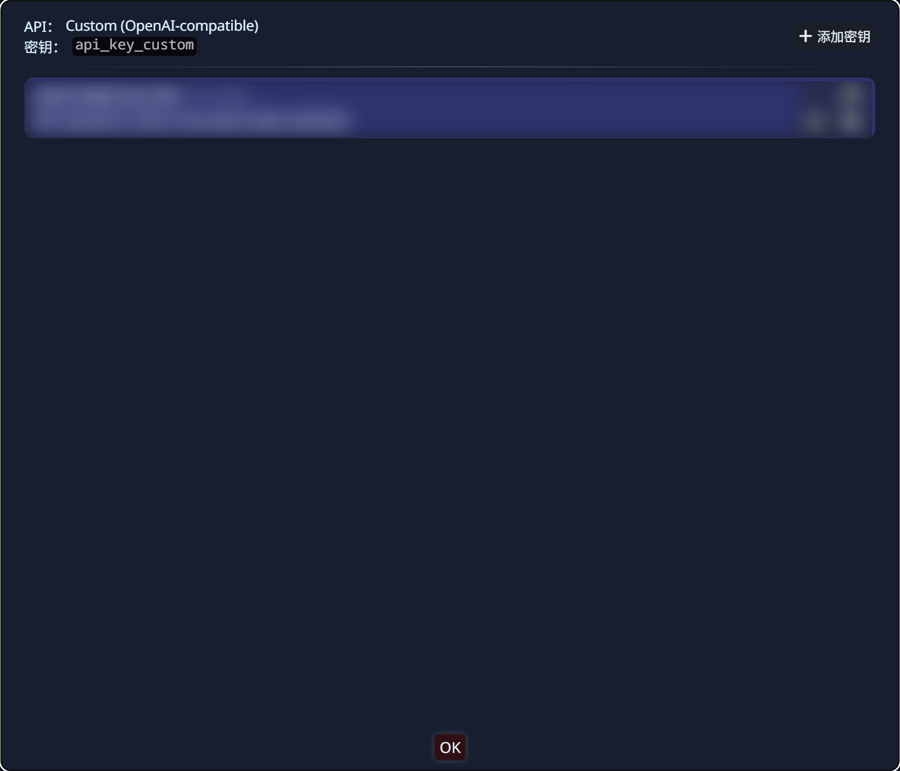
点击添加密钥，第一个空填你复制的API密钥，第二个空可以不填
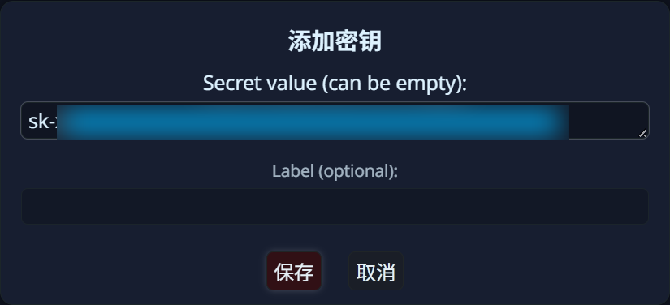
填写完毕后点击保存，而后点击底部的OK即可
_输入模型名_这里选择的是Qwen/Qwen3-8B，事实上硅基流动上有很多免费的模型，8B及以下的模型基本上可以免费用，记得看清楚即可
使用该模型的原因是不需要思考，并且吐token的速度也还可以，能满足一般的聊天需求
如果需要更加优质的API，则需要付费使用了，希望量大便宜的可以使用DeepSeek，每百万Token还是比较便宜的，如果需要质量的话（如Gemini），一方面操作起来比较麻烦，另外一方面价格也不便宜，此处便不做演示
_提示词后处理_选择半严格（强制对话角色交替）
之后点击发送测试信息如果显示绿色的则说明可以使用，点击连接即可
开始聊天
SillyTavern默认自带一个角色Seraphina
点击上面最右边一个长得像卡片的按钮，选择Seraphina便可开始聊天
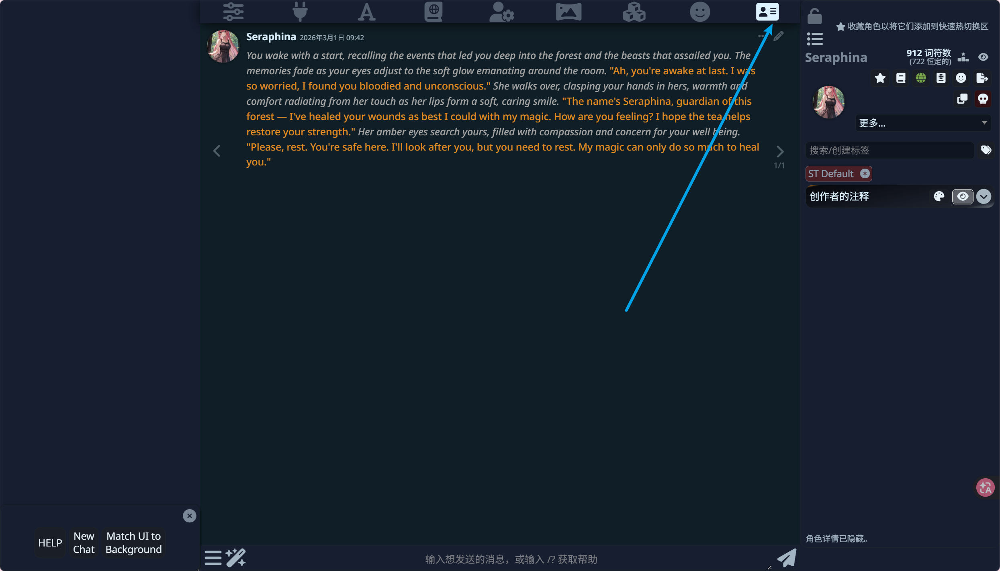
由于该角色以绑定了自带的世界书Eldoria，所以我们并不需要自己去设置世界书
如果你需要修改世界书，我们可以这么进行操作：
点击顶部的第四个按钮进入世界信息
按照下图的提示选择Eldoria，而后便可以进行修改
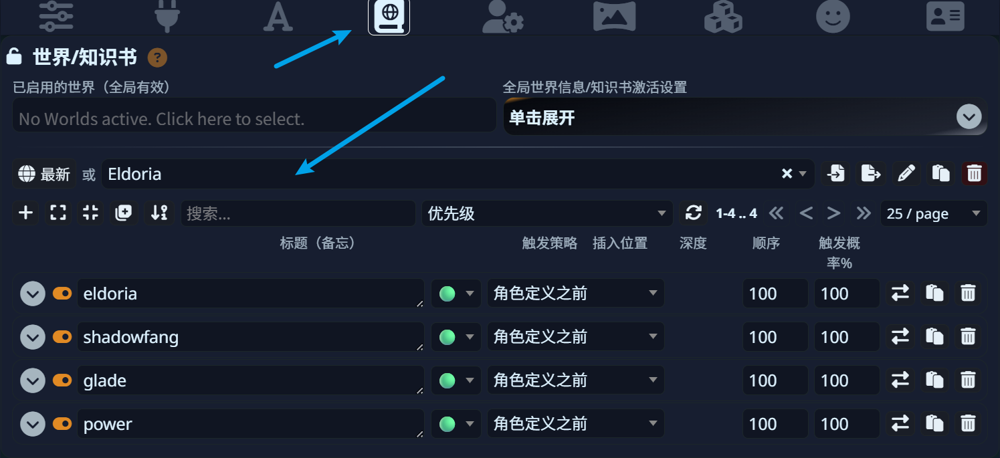
如何关闭
如果你不想使用了，可以在打开的cmd窗口处按下cmd+C，而后输入y即可直接退出